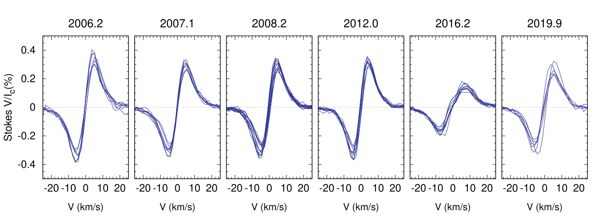

AD Leo. Observations from 2019
LSD Profiles
We got 6 observations in 2019. Stokes V profiles shown below. It looks like amplitude-wise, the profiles are recovered most of the pre-2016 amplitude.

The phase coverage is not great, we have four observations clustered at phase 0.7-0.8, one at 0.0, one around 0.5:
- 0.00
- 0.46
- 2.72
- 1.80
- 1.81
- 1.81
ZDI
I ran ZDI on the data anyhow, following same approach than for 2012 and 2016 data, with the same Stokes I filling factor value, regularisation parameters values, and Stokes V filling factor values. I adjusted a bit the line depth to match Stokes I profiles (the value was also adjusted for 2012 and 2016 data).
I checked with Stokes V value was preferred in the same way than for other epochs, plotting the Stokes V deviation versus Stokes V filling factor. It looks like there is a minimum around f_V = 12%.